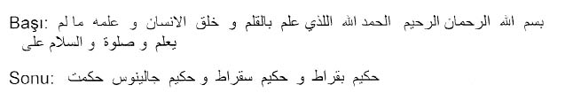

Yusuf bin Nizameddin Edvârı, Paris, Bibliothèque Nationale de France,
Şark Yazmaları [Suppl. Turc 1424], vr. 2b/3a.
3a’da bir sehpa üstünde vazo içinde çerçeveli çiçek ve 15a’da tek bir çiçek (gül) resmi (altında “Dilberin güldükçe yanağında gül, açtı yanda goncası bile”).24
11 – [Suppl. Turc 1206]
Mecmua. 72 yaprak; 21.5x10.5cm (yazılı alan muhtelif); âharlı kâğıt; 1-30a’da divani, sonrasında nesih yazılar; yazılar bazen mail bazen da düz, zaman zaman ise çift sütun üzerine; bazı sayfalar ters bağlanmış; sayfada muhtelif satır adedi; 28b, 29a, 33a, 42b, 45b, 37a, 48a, 53b, 55b, 56a, 62b, 63a, 64b, 65a, 66a, 72b sayfalar boş; karton cildi Fransız, sırtta “Mélanges” ibaresi.
İmza, ketebe ya da tarih yok; muhtemelen onsekizinci yüzyıl son çeyreği, en gecinden ondokuzuncu yüzyıl başı; 1a’da mecmuanın bazı sayfalarıyla aynı elden çıkmış olan bir mülkiyet kaydı: “fi nevbeti’l fakîr Ali tanburcu ‘afyi ‘anhu sene 1215” ibaresi ve (Ali) mührü; 22a’da “fi 10 Safer 1173” tarihi; 25a’da “fi 10 Şevval 1185” tarihi; 63b’de bir dua’nın içinde “hâzâ es’sultan fi’l-vakt sultan’ül-mülûk sultan Hamid Han” ibaresi.
1b-29b kırık bir divani yazıyla muhtelif vakfiye suretleri, telhis-i hümayun ve berat suretleri, temessük kayıtları, çeşitli tezkereler, izinnameler ve subaşılık buyurulduları; 29a dua-yı aşure.
Musıkiyle ilgili kısmı 30a-72b sayfalarda; Na’t, ilâhi, âyin ve şarkı mecmuası; fasıl başlıkları ya da form sıralaması izlenmemiş; 30a’da ilâhi Uşşak; 32a’da Bayatî Mevlevî Âyininin güftesi; 31a’da Na’t-ı Mevlânâ; 35b’de “Şarkı Hâfız Şeyda, Hicaz muhâlifek”; 40a’da “şarkı Hicaz, Hâfız Şeyda”; 40b’de Nasuhî Efendi, kuddise sırruhu, Rahatülervah; 45a’da Sabâ beste, Hâfız Post “Câm-ı gam nûş etmeye bir yâr-ı hemdem bulmadık”; 50a’da Pençgâh Mevlevî Âyininin güftesi; 51b’de “Şehnaz ilâhi beste, Dede”; 57b’de beste Devr-i kebir Rahatülervah, Hâfız “Sen bu cemâl ü hüsnle mihr-i felek misin nesin”; 58b’de Beste Bayâti, Nazîm; 60a’da der fasl-ı Nevâ “Gül yüzlülerin şevkine gel nûş edelim mey”; 60b ve 69b’de Mesnevî’den birkaç beyit; 70a’da Na’t-ı Mevlânâ’nın tam metni; 70b’de “Türkü Seyyid Ali Kaptan”; 42a’da 21 adet usulün darpları verilmiş: (Zencir, çifte Düyek, Fahte, Hafif, Devr-i kebir, Berefşan, Sakîl, sâde Düyek, Semaî, Yürük Semaî, Remel, Evsat, “Devr-i kebir bu gûnâ dahi”, Aksak Berefşan, Evfer, Aksak Fahte, Türkî darb, Hâvî, Nîm Devir, Frenkçin, Darbıfetih, Devr-i Revan);
12 – [Suppl. Turc 1377]
Mecmua. 46 yaprak; 22x14.5 cm (yazılı alan muhtelif); sarı, yeşil, çoğunlukla beyaz âharsız kâğıtlar; iki sütun üzerine mail önce nesih sonra talik yazılar; satır adedi muhtelif; 9a-10b sayfalar boş; şiir başlıkları bazen sürh bazen beyza ile; 1b-12b’de başlıklar zerendûd mürekkeple; çok tahribat görmüş ama birçok sayfalarının kâğıdı ve kenarları yenilenmiş; Fransız cildi yeni; koleksiyoncu Decourdemanche’a ait olan yazma 1915’te kütüphaneye nakledilmiş.
İmza, ketebe ya da tarih yok; 6a’da iki adet silik mühür okunamadı; Blochet’ye göre padişah III. Murad, III. Mehmed ve I. Ahmed dönemlerine (1574-1617) ait şiirler içeren mecmua onyedinci yüzyıl başlarına ait.
1b “Na’t-ı Sultan Ahmed der makam Hüseynî”; 2a Na’t-ı Mevlânâ; 8b “güfte-i Ruhî”; 12b “güfte-i sultan Murad Hân: Bahçede gördüm gezerken dilberi/Serv-gül endâm imiş ol peri”, mahlâs: Murâdî; 13a’da “güfte Ebussuud Efendi, der makam Bayatî beste Hanendebaşı Şeyh Mehmed”; 20a “Uzzal semai beste Derviş Ömer, Uzzal semai beste Ali Ağa”; 26a’da “Makam Irak, güfte sultan Murad Hân Devr-i Revân; çeşitli şiir, gazel ve müfredler, lugaz ve muammalar; Yahya Efendi, Bakî, Abdî, Necatî, Sulhî, Kâtibî’nin gazelleri.
13 – [Suppl.Turc 1424]
Edvâr. Yazarı: Yusuf bin Nizameddin bin Yusuf el-Kırşehrî er-Rûmî el- Mevlevî; Farsçadan Türkçeye çeviren Harirî bin Muhammed; 38 yaprak; 17.5x13 cm (yazılı alan 13x8.5); 1 ve 2. yapraklar yırtık; sürh çerçeve içinde harekeli nesih yazı; başlıklar ve daireler sürhle; 2b’de tezhipli serlevha; miklebli, şemseli cildi Osmanlı; ön ve arka kapak içleri silik mavi ebrûlu; Türkolog Jean Deny’ye ait yazma 1966’da kütüphaneye girmiş; ilk tarifini 5 Haziran 1941’de bizzat Jean Deny yapmış.25
33b’deki ibareye göre bu yazma Yusuf bin Nizameddin’in eserinin Türkçeye çevirisi, yazısı, tezhibi ve çizimleriyle “Derviş Harirî ibn Muhammed”26 elinden çıkmış; 873 yılının Şaban ayının son on gününün (Mart 1468) tarihini taşıyan orijinal nüsha; 1a’da farklı bir elden ve daha geç bir döneme ait “hâzâ kitâbü’l-edvâr Kantemiroğlu” ibaresi; 1b’de yine farklı bir elden “kitabü’l-edvâr Sultan Selim Hân tâle bekahu” ibaresi; yazmanın muhtelif yerlerinde yazı alanı dışında aynı elden çıkmış bir mülkiyet kaydı: “sâhibehu seyyid Mehmed”
2b-33b Edvâr; 29b’de zerendûd mürekkeple tellerinin üzerinde perde adları olan bir ud resmi; 30a’da tellerinin üzerinde perde adları olan bir çeng resmi; 7b daire-i terkibat; 8a-14b çeşitli daireler; 14b-15a terkipler cetveli; 20b-24b usul daireleri, toplam 18 usul; 29a-31b’de ud, çeng ve ney icrası hakkında bilgiler; 3a’da “Bilgil kim Yusuf bin Nizameddin bin Yusuf el-ma’ruf bi Kırşehrî el-Mevlevî rahimehu Allah bazı azizler andan iltimas etmişler kim işbu risaleyi bu müşkil ve muğlâk ibarattan bir gökçek ve rûşen ibarata getirsin tâ ki müfid ve muhtasar ola...”; 3b’de “...ol merhum ve mağfur dahi tetebbu’ etmiş, geçmiş üstadların edvârından bir muhtasar edvâr yine Farısi dilince bünyâd eylemiş tâ okuyucuya ve işidiciye faide vere, ol üstâdları duâ ile analar. Amma bu asırda dahi bazı eshâb geldiler bu duacıdan istida ettiler ki bu kitab Türkî diline tercüme oluna tâ faidesi ‘amma ve hassa beraber...”; 6b’de “Bilgil kim bu kitabın adı edvârdır ve her kişi kim bu edvârı okudu velî amele getirmedi, bu ilmin asl ü fer’in bilmedi, hemân bu ilmin adın bildi tadın bilmedi. Bu ilim havâî ilimdir, bununla amel eylemek gerek; ameli oldur kim bir kâmil üstâdın hizmetine varasın şöyle kim kendi okumuştur ve bilmiştir ve yetişmiş ve öğrenmiştir, sana dahi tâlim ede ve göstere, tâ sen dahi bilip üstâd olasın...”; 33b’de ketebe kaydı ve tarih.
34a-38b’de farklı elden çıkmış aynı döneme ait bazıları silik ve okunaksız muhtelif Arapça ve Farsça güfte ve beyitler; 34a “terkib Mevlânâ Kutbüddin Şirazi”; 34b “Hüseynî Sakîl Abdülmümin Safiyüddin”; 35a “Irak se darb Ali Sitaî, Dügâh se darb min zâlik”, 36a “Çargâh amel Abdülkadir Sultan”; 36a “Pençgâh Nîm Sakîl Mirza”, “Çargâh se darb Hoca”; 36b “Gerdaniye Safiyüddin Abdülmümin” vs.27
Edvârın bilinen diğer nüshası:
1- Ankara, Millî Kütüphane, [G.K. 131/1] , ondokuzuncu yüzyıl başlarına ait nüsha.
14 – [Suppl. Turc 1429]
İlâhi Mecmuası. Niyazî-i Mısrî divanı ve Aziz Mahmud Hüdaî divanından seçmeler; fihristi yok; 150 yaprak; 19x11 cm (yazılı alan önce 14x8 sonra 12x7 cm); 150a-150b boş; âharlı kâğıt; iki sütun üzerine 85b sonrasında harekeli nesih yazı; 1-84 (Niyazî divanı) sürh çerçeve içinde; başlıklar sürhle; sırtı meşin bez ciltli; muhtemelen ondokuzuncu yüzyıl başlarına ait nüsha; 15.4.1957’de satın alınmış.
84a’da müstensih imzası: “Derviş Mehmed el-Mevlevî” ve bir tarih: “gurre-i Zilhicce 1230”; 1a’da mülkiyet kayıtları: Seyyid Mehmed Haşim, Seyyid İsmail (sene 1100); Mehmed Emin; bir mühür “Abdurrahman”, ve 13 Safer 1235 tarihi.
1-84a Niyazî Mısrî Divanı; 1b’de serlevha “divan-ı hazret-i Mehmed el-Mısrî kuddise sırruhu”; ilâhiler hurûfa göre tertip edilmiş; bazılarının başında makamları belirtilmiş; toplam 141 adet ilâhi güftesi.
85a-149b Aziz Mahmud Hüdaî divanı; 121 adet ilâhi güftesi, hiçbirinde makam belirtilmemiş.
15 – [Suppl. Turc 1483]
Şarkı Mecmuası. 16 yaprak; 19.5x13.5 cm (yazılı alan 14.5x9.5); âharsız filigranlı Avrupa kâğıt; iki sütun üzerine mail temiz bir kâtip rık’ası yazı; yazılı alan kurşunkalem çerçeveli; sayfada muhtelif satırlar; fihristi yok; ebrû kaplı karton cildi tamir görmüş; cilt içleri yazılı; Türkolog Jean Deny’ye ait yazma 1966’da kütüphaneye girmiş.
İmza, tarih, ketebe, müstensih adı ya da istinsah tarihi yok; muhtemelen yirminci yüzyıl başlarına ait.
Fasıl başlıkları: der fasl-ı Rast (1b); der fasl-ı Uşşak (3b); der fasl-ı Hicaz(6a); der fasl-ı Hicazkâr(8b); der fasl-ı Hüzzam(10a), der fasl-ı Sûzinak(11b); der fasl-ı Muhayyer(13a); der fasl-ı Hüseynî(14a); 15a’da “Tanburî Cemil Bey’in Mahur şarkısı”; adı geçen besteci adları: Nikoğos Ağa, Hacı Arif Bey, Tanburî Ali Efendi, Tanburî Cemil Bey, Haşim Bey, Rıfat Bey, Selânikli Ahmet Bey, Çorlulu, Asım Bey, Şevki Bey; 16b’de “nakış Acemler: Hem kamer hem zühre hem müşteri der âsumân”; 10b’de “şarkı Sultan Selim: Gönül verdim bir civane.”
16 – [Suppl. Turc 1490]
Mecmua. 33 yaprak; 20.5x14cm (yazılı alan muhtelif); Avrupa kâğıt; iki, bazen da üç sütun üzerine talik kırması çeşitli ellerden çıkmış bazen düz bazen de mail yazılar; fihrist yok; 14a-32b arasındaki yapraklar ters bağlanmış; mecmua harap durumda, sayfalarının kenarı kararmış, yenmiş ve kurtlanmış, birçok yeri rutubetlenmiş; bazı yaprakların üst kısmı hararet görmüş gibi tamamen kararmış; ilk iki ve son iki yaprak tamamen yırtık; Türkolog Jean Deny’ye ait yazma 1966’da kütüphaneye intikal etmiş; düz meşin cildi mastarlı.
İmza, ketebe, müstensih adı ya da istinsah tarihi yok; çeşitli yerlerde tarihler; 3a’da bir tarih ve bir isim: 1193 Reşid; 16b’de muhtelif hesaplar ve “işbu bin yüz seksen dokuz senesinde hâsıl olan mahsûlât beyan olunur...” ibaresi; 17b’de bir çeşmenin tarih beyti: “Şeyhiyâ her bir gelen âteşâne tarihin dedim / Fisebilullah bu nev çeşmeyi ettim bina”, sene 1189”; muhtemelen onsekizinci yüzyıl sonlarına ait.
Karışık şiir ve güfteler, birçoğu başlıksız; 2a, 2b, 3a, 5a’da çeşitli ilâhi, beste ve semailer, müstezad ve müfredler; 9a’da Muhibbî’nin bir gazeli; 11b “gazel-i Sultan Murad Hân”; 12a “gazel-i Arif”; 13a beste Sabâ; 23a “beste der makam Hüseynî, Bekir Çavuş, güfte Sultan Mahmud”; 23b “beste der makam Hüseynî, Âmâ Hâfız”; 24a Na’t-ı Sabit Efendi; 24b “Kahvenâme-i Beliğ”; 25b “Berbernâme-i Beliğ”; 26b “Hamamnâme-i Beliğ”; 29b “Hayyatnâme-i Beliğ”; 28a Nef’î’nin muhtelif gazelleri ve bahar kasidesi; 33a’da “Hâneberduşa sorulmaz kande yatar/Kâh koynunda yatar kâh külhanda yatar.”
17 – [Suppl. Turc 1495]
Edvâr (Tefhîmü’l-Makamât fi Tevlidü’n-Nagamât). Yazarı: Hızır Ağa; son bölümü eksik; 40 yaprak; 18.5x12.5 cm (yazılı alan 11x5.5); 7a boş; filigranlı Avrupa kâğıt; sayfada 14 satır; yer yer silikleşmiş talik yazı; bölüm başlıkları, daire ve şekiller, usul adları, metin içindeki makam ve terkib adları sürhle; 48.5x34.5 cm’lik kalın âharlı kâğıda çizilmiş ayaklı başpâresiyle bir ney resmi, ney’in uzunluğu 46 cm; ciltsiz, Fransız karton mahfaza içinde; Türkolog Jean Deny’ye ait yazma 1966 yılında kütüphaneye intikal etmiş, Mart 1966’da kataloglanmış.
İmza, ketebe veya tarih yok; muhtemelen onsekizinci yüzyılın sonlarına ait nüsha.28

1b’de kitabın adı belirtilmiş: (Tefhîmü’l-Makamât fi Tevlidü’n-Nagamât); 2a’da “Safiyüddin Abdülmümin ve Şeyh edvârlarında bâzı perde ismin evvel devrin ibaratıyla fi zemanina ta’bir ve ism-i mâ lâ yüfhem ile târif edip nice nagamât-ı hoş-elhân fehm olunmayıp kalmıştır...”; 3a’da “...bu abd-ı kalil Hızır Ağa âcizane zamirine layih [aynen] olduğu zamanın saz u sözüne göre muvafık ibarat ile ta’bir ve nagamât-ı musıkiyenin mâ lâ yüfhem olan olan ta’rifin tâbir edip...”; 5b-6b’de makamlar, burçlar, dört unsur, mevsimler ve insan tabiatları arasında mutabakat cetvelleri; 7b-13a perde ve makamat daireleri; 13b-25a “der beyân-ı târif-i makamat”; örnek: 13b “Dügâh ism-i perde ve şu’be olup imtizac-ı nagamâtı budur ki Zirgüle nîmi ile Dügâh Segâh ve Çargâh ve Hüseynî gösterip yine Çargâh ve Nevâ ve Nevâda Çargâh ve Segâhı beyan ve Zirgüle ile makarrı Dügâh perdesinde ayan ede. Şu’be-i mezkûr ba’del nevm sabahlarda istimaı sebeb-i neş’et-i cismani olup balgamiyyü’l mizaç olanlara mevrus-u inbisattır”; 25a-27a “der beyan-ı darb-ı usulât” başlığı altında iki sütun üzerine 25 adet usulün darplarının adedi (“darb-ı evvel” ve “darb-ı sânî” olarak); 32b-33a’da makam, âvâze ve şube listesi: “Evvel Rast, Irak Isfahan, Zirefkend, Büzürk, Zengûle, Rehâvî, Hüseynî, Hicaz, Bûselik, Nevâ, Uşşak; âvâzeler dahi yedidir Geveşt, Nevruz, Selmek, Şehnaz, Mâye, Gerdaniye, Hisar; şubeler dahi dörttür 1) Yegâh, 2) Dügâh, 3) Segâh, 4) Çargâh”; 34a-38b “beyân-ı terkibat”; edvârın son sayfaları eksik.
Hızır Ağa Edvârının bilinen başka nüshaları:29
1- Topkapı Sarayı Kütüphanesi [H. 1793]30
2- Süleymaniye Kütüphanesi [Hafid Efendi 291]
3- İstanbul Büyükşehir Belediyesi Atatürk Kitaplığı [Muallim Cevdet K. 177].31
18 – [Suppl. Turc 1533]
Mecmua. 86 yaprak; 20.5x13.5 cm (yazı alanı muhtelif); âharlı ve filigranlı Avrupa kâğıt; iki sütun üzerine mail talik yazı; boş sayfalarda sonraki dönemlerde nesih yazıyla ilâveler; bazı başlıklar sürhle; ilk iki yaprak tamamen yenmiş; makam sıralaması veya fihrist yok; 23a-25a, 32b, 33a-42a, 44a, 44b, 49a-56b, 58a, 58b, 62a-64b; 75a-77b boş; şemseli cildin içleri taraklı ebrulu; Türkolog Jean Deny’ye ait yazma 1966 yılında kütüphaneye intikal etmiş.
İmza, ketebe veya tarih yok; 4a’da bir mülkiyet kaydı “Şeyh Ahmed Efendi”; 17a’da bir tarih “1112 hicrî”; 84a’da bir kayıt “Kızım Fatma yüz on sekiz senesinin Şaban-ı şerifinin dördüncü günü Cihârşenbih günü güneş doğduktan sonra dünyaya geldi. Hazret-i Allah tavîl ömür ile muammer eyleyip mes’ud eyleye ve sâlihalardan eyleye âmin, hurrire fi mah-ı Zilhicce fi yevm-i ‘arife sene 1118”.
1a-1b remil cetvelleri; 7a’da Tab’î Çelebi’nin ve Yahya Efendi’nin iki güftesi; 7b-8a “ilâhi der makam Muhayyer Mısrî Efendi”; 11b’de “İlâhi Hüdaî Mahmud Efendi”; 13a Eviç beste Hâfız Post “Gönül âyine olsun mücellâ”; 13b Fehim Çelebi’nin ilâhileri; 19b ve 20b’de “İlâhi Nakşî Efendi merhum”; 21a-22a’da Semaî Nazifî; 26a, 26b ve 32b’de birer “türkü”; 26b’de “Mail oldum sevdiğim tatlı diline/Alam kaçam seni urum iline”; 30a-31b’de “der beyân-ı fezâil-i hurûf”, muhtelif sihir ve dualar, karınca duası; 47a-47b’de tâlik yazıyla inşa örnekleri; 69a-71b’de hutbe örnekleri; 69b’de “hutbe-yi mîrâc”; 80a’da gazel-i Nef’î; 84a’da ebced harf ve rakamları; 84b’de esmâ-yı hüsnâ.
19 – [N.A. 4023]
Essai sur la Musique Orientale Comparée à la Musique Européenne (Şark Musıkisi; Avrupa Musıkisiyle Karşılaştırmalı Bir Deneme). Yazarı: Charles Fonton; yazılış tarihi 1751; 19x26 cm (yazılı alan 14x23); sayfada 17 ya da 18 satır; Avrupa kâğıt; güzel olmamakla birlikte muntazam Fransızca sağa mail yazı, Türkçe kelimeler temiz bir sülüsle; Jean-Baptiste Adanson’un elinden çıkmış beş adet şekil ve Charles Fonton’un elyazısıyla on bir sayfa nota eklenmiş; düz meşin cildi Fransız; kütüphaneye ilk girişinde önce V-1793-D numarayla tasnif edilmiş, 1899’da ikinci bir tasnifte [Nouvelles Acquisitions 4023] olarak kaydı değiştirilmiştir.
Charles Fonton’un bu yazma eseri iki kısımdır: ilk kısım VII+143 sayfa olup musıki hakkındaki bu “Deneme”’yi içerir; ikinci kısım 76 sayfadır ve Fonton’un Şehname’den özgürce aktardığı Züleyd ve Feramerz hikâyesinin metnidir. Fonton’un eserinin çeviri ve yayınları:
1-Revue et Gazette Musicale de Paris dergisi içinde kısaltılmış yayın (no.43, 28 Ekim 1838 s. 421-426 ve no. 44, 4 Kasım 1838, s. 433-435)
2- Eckhard Neubauer, “Der Essai sur la musique Orientale von Charles Fonton mit Zeichnungen von Adanson”, Zeitschrift für Geschichte der arabisch-islamischen Wissenschaften, II/1985, s.277-324 ve III/1986, s. 335-376.
3- Türkçe çevirisi ve yorumu: Cem Behar, Onsekizinci Yüzyılda Türk Müziği, İstanbul, Pan Yayıncılık, 1987.
4- İngilizce çevirisi: Robert Martin, “Essay comparing Turkish Music with European Music...”, Turkish Music Quarterly (Journal of the Center for Turkish Music, University of Maryland, Baltimore County), I/2, s.1-9 ve II/1, s.1-11.
5- Tıpkıbasımı, transkripsiyonu ve yorumu: Eckhard Neubauer, Der Essai sur la musique Orientale von Charles Fonton mit Zeichnungen von Adanson, Institute For the History of Arabic-Islamic Science at the Johann Wolfgang Goethe University (The Science of Music in Islam-Volume 4), Frankfurt, 1999.